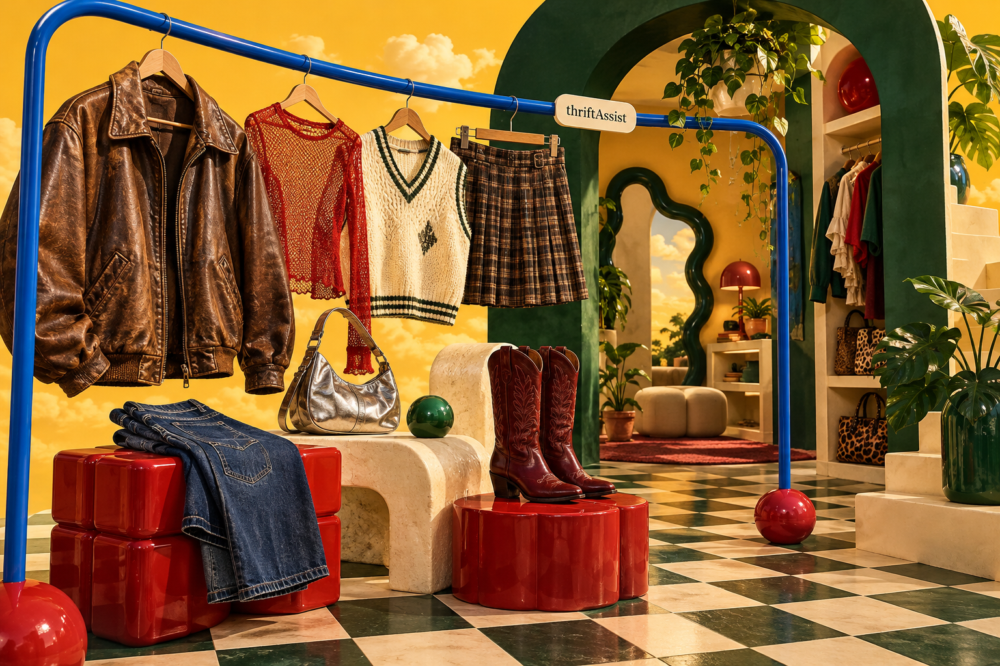
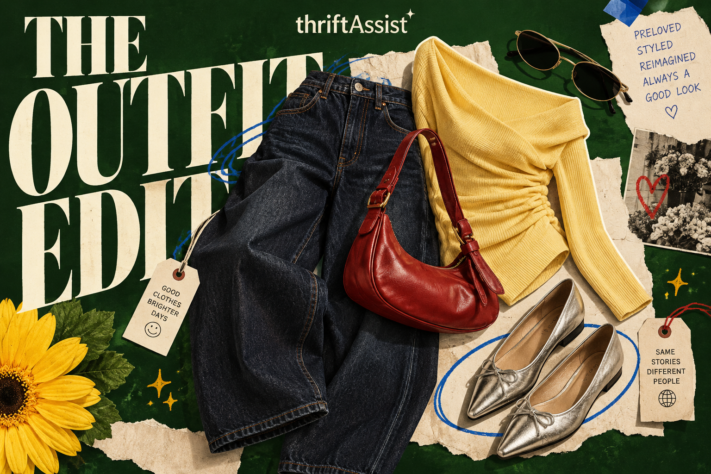
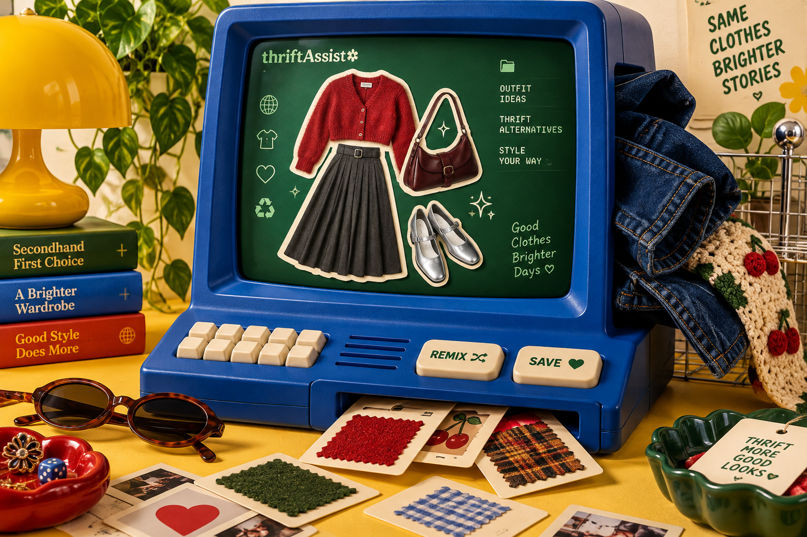

Talk through your style.
A Claude-powered stylist conversation with responses that stream as they’re generated.
PERSONAL PROJECT. PERSONAL STYLE.
Some interests become hobbies.
This one became thriftAssist.


FEATURED PROJECT / 01
“I have nothing to wear”
felt like a problem worth coding.
thriftAssist is an AI stylist for secondhand fashion. It brings together personal style advice, fit information, and thrift-first recommendations, so finding something that feels like you takes a little less searching.
I built it around a streaming conversation with Claude, saved style profiles, and secondhand discovery through eBay.
Explore the codeThe outfit is the fun part.
Here’s what makes the app work.

The visuals imagine thriftAssist’s world. They’re concept artwork; the app and its code are on GitHub.
A Claude-powered stylist conversation with responses that stream as they’re generated.
Body measurement analysis and saved profiles to make styling more personal.
Thrift-first recommendations through eBay, with account authentication and automated API tests behind the scenes.
THAT’S THE PROJECT. HERE’S THE NEXT CLICK.